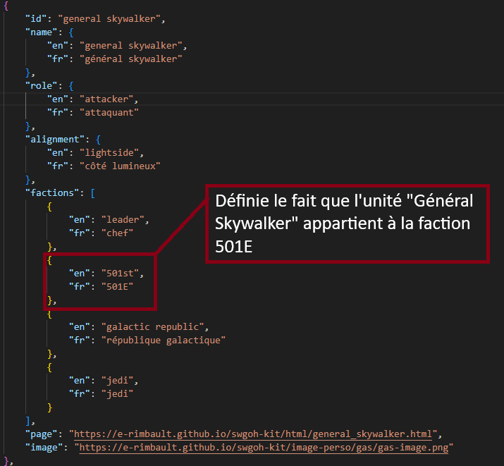
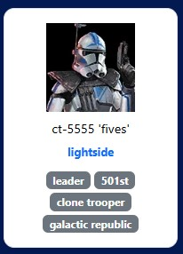
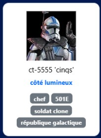
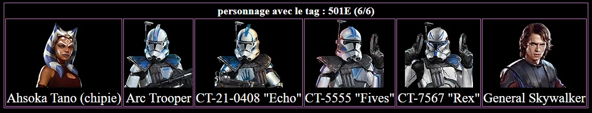

Chaque page de faction, comme 501E.html, a pour but d’afficher la liste des personnages (ou
unités) appartenant à une faction spécifique du jeu
Star Wars Galaxy of Heroes.
Par exemple, la page 501E.html affiche uniquement les unités liées à la faction
501E (ou 501st en anglais).
Ces données ne sont pas écrites manuellement : elles sont automatiquement extraites depuis le fichier
units.json.
Page
501E.html
qui permet d'y afficher toutes les unités ayant le tag
501E (ou 501st).
Grâce à cette approche dynamique, la même structure HTML peut être réutilisée pour toutes les factions du
jeu
(Empire, Sith, Jedi, Rebelles, etc.), simplement en changeant le nom de la faction.
2. Récupération des unités depuis units.json
Lors du chargement de la page, un script JavaScript utilise la fonction fetch() pour charger le
fichier
units.json qui contient la liste complète de toutes les unités disponibles dans le jeu.
fetch("../filtre-recherche/units.json")
.then(response => response.json())
.then(data => {
allUnits = data; // Stocke toutes les unités du JSON
renderUnits(); // Lance l'affichage des unités filtrées
})
.catch(error => console.error("Erreur lors du chargement des unités :", error));

Le fichier JSON contient pour chaque unité des informations multilingues :
name, role, alignment, factions, image et
page.
Cette entrée JSON représente l’unité General Skywalker.
Chaque champ a un rôle précis :
- id : identifiant unique de l’unité.
- name : noms en anglais (en) et français (fr).
- role : rôle en combat, traduit en anglais et en français.
- alignment : alignement de l’unité (côté lumineux, obscur ou neutre) avec traduction.
- factions : liste des factions auxquelles l’unité appartient, chaque faction avec son nom
anglais et français.
- page : lien vers la page détaillée de l’unité.
- image : URL de l’image représentant l’unité.
Ce format permet aux pages comme 501E.html
d’afficher dynamiquement les unités et de gérer la langue selon la préférence de l’utilisateur.
3. Sélection des unités appartenant à la faction
Une fois toutes les unités chargées, le script filtre uniquement celles appartenant à la faction voulue.
Cela se fait grâce à la variable factionKey qui dépend de la langue active sur la page.
f[currentLang] : récupère le nom de la faction dans la langue sélectionnée.
|| f.en : utilise la version anglaise si la version française n’existe pas.
toLowerCase() : rend la comparaison insensible à la casse.
some() : vérifie si l’unité appartient à la faction recherchée.
Le résultat est une liste filtrée contenant uniquement les unités de la faction
501E / 501st, prêtes à être affichées sous forme de cartes.
Comment les cartes d'unités sont créées ?
Chaque carte d'unité sur la page est générée dynamiquement en JavaScript à partir du fichier units.json.
Le script parcourt la liste complète des unités et filtre celles appartenant à la faction sélectionnée (par exemple "501E" ou "501st").
Pour chaque unité filtrée, le script crée un élément HTML avec la structure suivante :
Image de l'unité :unit.image est utilisé comme source de l'image. Si l'image est manquante, une image par défaut est affichée. Cette valeur ne change pas selon la langue.
Nom de l'unité : le nom affiché dépend de la langue sélectionnée :
unit.name.en si la page est en anglais
unit.name.fr si la page est en français
Rôle et alignement : ces informations sont également traduites en fonction de la langue :
Rôle : unit.role.en ou unit.role.fr
Alignement : unit.alignment.en ou unit.alignment.fr
Factions : le nom de chaque faction est affiché selon la langue sélectionnée :
faction.en si la page est en anglais
faction.fr si la page est en français
Lien vers la page détaillée :unit.page — cette valeur reste identique quelle que soit la langue.
Le rendu visuel inclut des styles CSS pour arrondir les coins, ajouter des ombres et un effet au survol afin de rendre les cartes interactives et esthétiques.
Le code JavaScript principal pour la création des cartes se trouve dans la fonction renderUnits(), qui utilise document.createElement pour générer chaque carte dans le conteneur #characters.

CT-5555 "Fives" — version anglaise dans unit.json

CT-5555 "Cinqs" — version française dans unit.json
5. Évolution de l'affichage des unités
L'affichage des unités d'une faction a évolué d'une ancienne version statique vers la nouvelle version dynamique
utilisant units.json. Voici une comparaison détaillée des deux approches :
Critère
Ancienne version
Nouvelle version
Structure HTML
Table statique avec balises <table> et <td> pour chaque unité.
Conteneur <div>
Dynamisme
Unités codées directement dans le HTML. Toute modification nécessite une édition manuelle.
Unités générées automatiquement depuis units.json. Modification centralisée et facile.
Multilingue
Nom des unités fixe (souvent seulement anglais ou français).
Nom, rôle, alignement et factions changent selon la langue sélectionnée.
Style et design
Style minimal, table simple, texte sous les images.
Cartes stylisées avec ombres, coins arrondis, effet hover, responsive et centrage automatique.
Interactivité
Pas d’interactivité. La page est purement statique.
Cartes cliquables vers la page détaillée de l’unité, changement de langue dynamique.
Filtrage
Aucune possibilité de filtrage par faction ou rôle.
Filtrage automatique par faction selon le JSON et la langue sélectionnée.
Recherche
Impossible de rechercher une unité sur la page.
Recherche dynamique intégrée via JavaScript (ex: filtre par nom ou rôle).
Accessibilité
Images sans attributs alt cohérents, texte fixe uniquement.
Images avec alt dynamiques selon l’unité, meilleure lisibilité et adaptation aux lecteurs d’écran.
Gestion des images manquantes
Si image manquante, la cellule reste vide ou l’affichage est cassé.
Affichage d’une image par défaut si aucune image n’est fournie.
Responsive design
Table fixe, peu adaptée aux petits écrans.
Cartes responsives avec flexbox et grille, adaptées à toutes les tailles d’écran.
Maintenance et réutilisation
Difficile à maintenir et à adapter pour d’autres factions.
Facilement réutilisable pour n’importe quelle faction, juste en changeant le nom de la faction dans le script.
Exemple visuel

Ancienne version statique (table)
Nouvelle version dynamique (cartes)
Cette comparaison détaillée montre clairement les améliorations apportées avec la version actuelle : flexibilité, support multilingue complet, interactivité et design moderne.